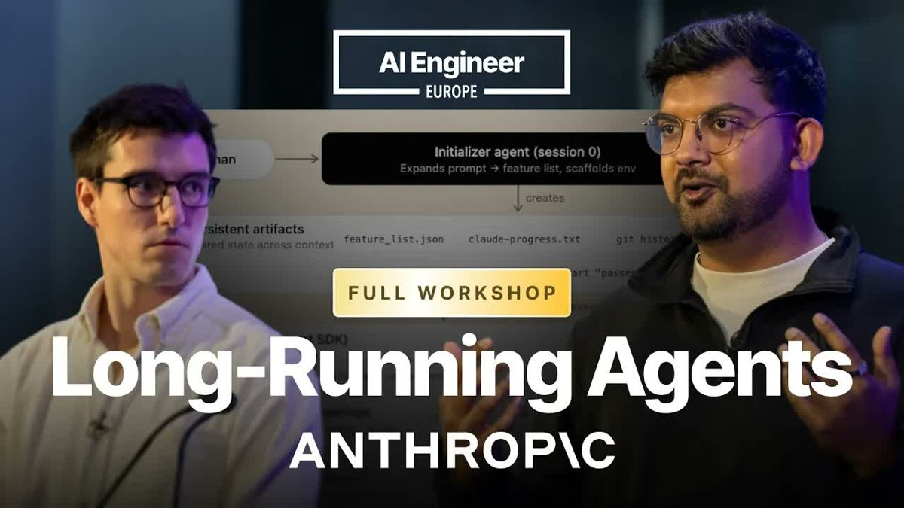

출처:
- Anatoli Kopadze X 포스트
- Anthropic Workshop: Build Agents That Run for Hours — Ash Prabaker & Andrew Wilson
- Anthropic Engineering: Harness design for long-running autonomous agents

Anatoli Kopadze가 공유한 영상은 Anthropic의 Ash Prabaker와 Andrew Wilson이 AI Engineer 워크숍에서 발표한 내용입니다. 제목은 “Build Agents That Run for Hours”. 핵심은 단순합니다.
앱을 처음부터 끝까지 만들게 하려면, “더 똑똑한 모델 하나”보다 모델을 어떻게 루프에 넣을지가 더 중요해진다.
이 발표가 흥미로운 이유는 데모 자랑이 아니라, Anthropic 내부 엔지니어들이 장시간 에이전트를 만들며 실제로 부딪힌 실패 모드와 하네스 설계를 꽤 솔직하게 설명하기 때문입니다.
Q1. 왜 그냥 Claude Code를 오래 돌리면 안 되나요?
A. 발표 초반 Andrew Wilson은 장시간 에이전트가 어려운 이유를 세 가지로 정리합니다.
첫째, 컨텍스트 문제입니다. 컨텍스트 윈도우는 유한하고, 세션을 새로 시작하면 기억상실이 생깁니다. 반대로 한 세션을 너무 오래 끌고 가면 coherence가 떨어지는 “context rot”이 생깁니다. 모델이 컨텍스트 끝에 가까워질수록 급하게 마무리하려는 “context anxiety”도 관찰된다고 합니다.
둘째, 계획 문제입니다. 모델은 “처음부터 완성된 앱을 만들어줘” 같은 요청을 받으면 한 번에 다 하려다 중간에 길을 잃기 쉽습니다. 절반짜리 기능을 만들고 멈추거나, 중요한 기능을 건너뛰거나, 컨텍스트가 부족해지면서 미완성 앱을 남깁니다.
셋째, 가장 중요한데 자주 과소평가되는 문제는 자기 평가의 실패입니다. 모델은 자기 산출물에 관대합니다. 반쯤 구현된 기능을 보고도 “좋아 보인다”고 승인해버립니다. Anthropic 쪽 표현으로는, 에이전트에게 자기 PR을 리뷰하라고 시키면 꽤 쉽게 rubber stamp가 됩니다.
그래서 결론은 이것입니다.
생성하는 에이전트와 평가하는 에이전트를 분리해야 한다.
Q2. Anthropic이 제안한 핵심 구조는 무엇인가요?
A. Anthropic이 소개한 최종 구조는 세 역할입니다. Planner, Generator, Evaluator입니다.
Planner
플래너는 사용자의 한두 문장짜리 요청을 제품 스펙으로 확장합니다. 다만 너무 세부적인 구현 계획까지 박아 넣지는 않습니다. 발표에서 강조한 포인트가 좋았습니다.
세부 기술 결정을 플래너가 초반에 틀리면, 그 오류가 이후 모든 스프린트로 전파됩니다. 그래서 플래너는 “무엇을 만들어야 하는가”와 “제품적으로 어떤 경험이어야 하는가”를 잡고, 구체적 구현 경로는 뒤 단계가 협상하게 둡니다.
Generator
제너레이터는 실제 앱을 만듭니다. 코드 작성, UI 구현, 기능 연결, 테스트까지 담당합니다. 하지만 혼자서 “다 했습니다”라고 선언하는 게 아니라, 평가자가 합의한 기준을 통과해야 합니다.
Evaluator
평가자는 단순히 diff를 읽지 않습니다. Playwright 같은 브라우저 자동화 도구로 실제 페이지를 열고, 클릭하고, 입력하고, 깨진 흐름을 찾습니다. 그리고 비판을 제너레이터에게 돌려보냅니다.
중요한 점은 평가자도 LLM이라는 사실입니다. 그러면 평가자도 관대해지는 것 아닌가? Anthropic의 답은 이렇습니다.
빌더를 자기비판적으로 만드는 것보다, 별도 critic을 가혹하게 튜닝하는 편이 훨씬 쉽다.
사람도 비슷합니다. 좋은 음식을 직접 만들기는 어렵지만, 맛없는 음식은 비교적 쉽게 알아차립니다. LLM도 “생성 능력”과 “비평 능력” 사이에 간극이 있고, 하네스는 그 간극을 이용합니다.
Q3. Ralph Loop와는 무엇이 다른가요?
A. 발표에는 Ralph Wiggum loop 이야기도 나옵니다. 대략적으로는 프롬프트를 Claude Code CLI에 넣고, 완료될 때까지 반복 실행하는 패턴입니다. 겉으로 보면 단순 반복처럼 보이지만, 실제 핵심은 다음에 있습니다.
- 작업을 여러 기능으로 쪼갠다.
- 각 작업을 신선한 컨텍스트에서 실행한다.
- 완료 조건과 중단 조건을 둔다.
- 실패가 예측 가능하게 나도록 만든다.
Anthropic이 말한 새 하네스의 차이는 여기에 **대립적 평가(adversarial pressure)**가 들어간다는 점입니다. 고정된 plan.md를 따라가는 것이 아니라, 제너레이터와 평가자가 파일을 통해 서로 계약을 조정합니다.
평가자가 “이 기준은 너무 약하다. 이 엣지 케이스가 빠졌다”고 말하면, 제너레이터가 기준을 다시 읽고 수정합니다. 양쪽이 합의한 뒤에야 빌드가 시작되고, 이후 평가자는 그 계약을 기준으로 점검합니다.
즉, 루프의 핵심은 “계속 시키기”가 아니라 검증 가능한 계약을 만들고, 그 계약을 두 에이전트가 서로 압박하게 하는 것입니다.
Q4. “좋은 디자인” 같은 주관적 품질도 평가할 수 있나요?
A. 재밌는 대목은 프론트엔드 품질 평가입니다. Anthropic은 “디자인 취향은 채점할 수 없다”는 식으로 포기하지 않습니다. 오히려 강한 의견이 있다면 글로 적으라고 합니다.
그들이 예로 든 루브릭은 네 가지입니다.
- Design
- Originality
- Craft
- Functionality
특히 최신 모델은 기능 구현은 꽤 잘하므로, 디자인과 독창성의 비중을 더 높이기도 했다고 합니다. 목적은 뻔한 보라색 그라디언트, 카드 UI, “AI가 만든 것 같은” 미감에서 벗어나게 하는 것입니다.
이건 개발자에게도 중요한 힌트입니다. “예쁘게 만들어줘”는 루브릭이 아닙니다. 하지만 “레이아웃 밀도, 타이포그래피 대비, 상호작용 피드백, 빈 상태, 오류 상태, 모바일 대응”처럼 나누면 평가자가 실제로 압박할 수 있습니다.
Q5. 실제 결과는 얼마나 달라졌나요?
A. Anthropic Engineering 글에 따르면, 같은 “2D retro game maker” 요청을 단일 에이전트와 풀 하네스로 비교했습니다.
- Solo run: 약 20분, 약 9달러
- Full harness: 약 6시간, 약 200달러
비용은 20배 이상 비쌌지만, 결과 품질 차이는 즉시 보였다고 합니다. 풀 하네스는 “Retro Forge”라는 이름을 붙이고, 프로젝트 생성 다이얼로그, 캔버스, 스프라이트 에디터, 레벨 에디터, 플레이 테스트 모드 등 제품으로서 더 완성된 구조를 만들었습니다.
업데이트된 하네스에서는 브라우저 기반 DAW도 만들었습니다. “Web Audio API로 완전한 DAW를 만들어라”라는 요청에 대해 약 3시간 50분, 약 124.70달러가 들었습니다. 플래너는 4.7분에 0.46달러, 첫 빌드 라운드는 2시간 7분에 71.08달러, 이후 QA와 수정 라운드가 이어졌습니다.
여기서 중요한 해석은 “이제 AI가 앱을 공짜로 만든다”가 아닙니다. 오히려 반대입니다.
장시간 에이전트는 더 싸게 만드는 기술이 아니라, 더 긴 작업을 끝까지 밀어붙이기 위해 비용과 구조를 투입하는 기술에 가깝다.
Q6. 모델이 좋아지면 하네스는 필요 없어지나요?
A. 발표에서 반복해서 나온 메시지는 “하네스와 모델은 함께 진화한다”였습니다.
예전 모델에서는 세션 리셋, 스프린트 분해, 촘촘한 컨텍스트 핸드오프가 필수였지만, Opus 4.6급 모델에서는 긴 연속 세션과 서버 사이드 compaction만으로도 더 오래 버틸 수 있었다고 합니다. 반대로 모델이 좋아졌다고 하네스가 사라지는 것도 아닙니다. 필요 없는 발판은 줄이고, 여전히 약한 지점에는 새로운 발판을 둡니다.
이 말이 현실적입니다. “다음 모델이 나오면 하네스 엔지니어링은 죽는다”가 아니라, 다음 모델이 나오면 어떤 하네스를 삭제하고 어떤 하네스를 남길지 다시 판단해야 한다는 쪽에 가깝습니다.
Q7. 개발자가 바로 가져갈 수 있는 패턴은 무엇인가요?
A. 이 영상을 보고 바로 써먹을 수 있는 건 거창한 멀티에이전트 플랫폼이 아닙니다. 작은 패턴들입니다.
-
자기 평가 금지
만든 에이전트에게 “스스로 검사해”라고 하지 말고, 별도 평가자 역할을 둡니다. -
평가자는 실제로 실행하게 하기
코드만 읽게 하지 말고 브라우저, 테스트, 로그, 콘솔 에러, 네트워크 에러를 보게 합니다. -
루브릭을 글로 쓰기
“좋은 UI”, “좋은 코드”, “완성도” 같은 말을 체크리스트와 가중치로 바꿉니다. -
계약을 만들기
시작 전에 산출물 기준을 문서화하고, 제너레이터와 평가자가 그 기준을 서로 검토하게 합니다. -
트레이스를 읽기
Anthropic도 비밀 도구 하나로 해결한 게 아닙니다. 에이전트 로그를 읽고, 인간 판단과 갈라지는 지점을 찾아 프롬프트와 루브릭을 고쳤다고 합니다.
Q8. 그래서 이 발표가 말하는 큰 전환은 무엇인가요?
A. 이 발표를 한 문장으로 요약하면 이렇습니다.
에이전트 개발은 프롬프트 작성이 아니라, 작은 조직을 설계하는 일에 가까워지고 있다.
플래너는 PM처럼 요구를 제품 스펙으로 바꿉니다. 제너레이터는 엔지니어처럼 구현합니다. 평가자는 QA와 리뷰어처럼 실제 동작을 검증합니다. 이 셋이 같은 기억과 같은 성격을 공유하면 안 됩니다. 역할, 컨텍스트, 권한, 종료 조건이 분리되어야 합니다.
그래서 앞으로 중요한 역량은 “모델에게 잘 말하기”를 넘어설 것 같습니다.
- 어떤 역할을 분리할 것인가
- 어떤 아티팩트로 핸드오프할 것인가
- 무엇을 자동 평가하고 무엇을 사람이 볼 것인가
- 실패한 트레이스를 어떻게 규칙으로 바꿀 것인가
결국 좋은 에이전트는 똑똑한 모델 하나가 아니라, 좋은 루프를 가진 시스템입니다.